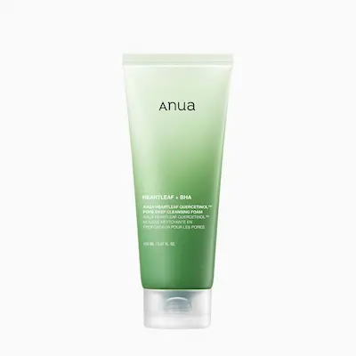
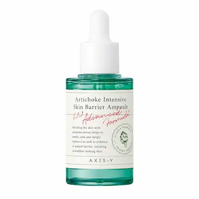
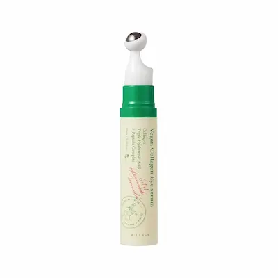
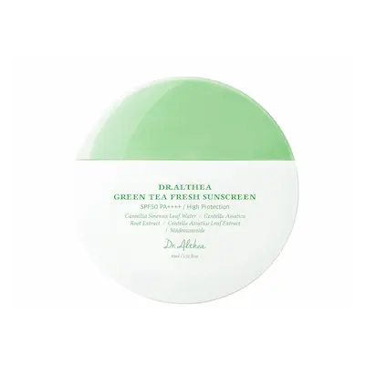

CENTELLIAN24 Expert Madeca Cream Active Renew PDRN — cremă pentru hidratarea și fermitatea pielii
Cremă coreeană destinată îngrijirii pielii care are nevoie de hidratare, catifelare și un aspect mai ferm. Analizăm formula cu PDRN, particularitățile ingredientelor-cheie și rolul acestora în menținerea barierei cutanate. Descoperim cui i s-ar putea potrivi crema, cum poate fi inclusă în rutina zilnică și în cea anti-îmbătrânire, precum și ce aspecte merită luate în considerare atunci când alegi un produs potrivit tipului tău de piele.
De ce merită să acorzi atenție acestei creme?
CENTELLIAN24 Expert Madeca Cream Active Renew PDRN este o cremă coreeană destinată celor care își doresc o rutină de îngrijire mai confortabilă, menținerea hidratării pielii și un aspect neted și îngrijit. Dacă pielea pare obosită, se simte uscată sau începe să-și piardă treptat fermitatea, merită să acorzi atenție nu doar ingredientelor hidratante, ci și formulei produsului în ansamblu.
Un interes deosebit îl prezintă PDRN — un ingredient pe bază de fragmente de ADN, studiat și utilizat în formule cosmetice pentru îngrijirea pielii. Totuși, simpla prezență a acestuia într-o cremă nu garantează un efect anti-aging pronunțat. Contează concentrația, compoziția întregii formule și caracteristicile produsului finit. De aceea, este important să evaluezi crema nu doar prin prisma unui ingredient popular, ci și în funcție de rolul său în rutina zilnică de îngrijire.
În această recenzie vom analiza ingredientele-cheie din CENTELLIAN24 Expert Madeca Cream Active Renew PDRN, rolul lor în hidratarea pielii și susținerea barierei cutanate, precum și particularitățile utilizării cremei. Vom vedea cui i s-ar putea potrivi, cum poate fi integrată în rutina anti-îmbătrânire și la ce să fii atentă atunci când alegi un produs pentru ten uscat, normal sau mixt.
Textura și prima utilizare
CENTELLIAN24 Expert Madeca Cream Active Renew PDRN este o cremă coreeană destinată îngrijirii pielii, potrivită celor care își doresc nu doar un plus de hidratare, ci și menținerea aspectului neted, catifelat și îngrijit al pielii. Atunci când alegi o cremă, contează nu doar ingredientele active, ci și cât de confortabil se simte produsul pe piele și cât de bine se integrează în celelalte etape ale rutinei de îngrijire.
În rutina zilnică, o cremă potrivită ajută la reducerea senzației de uscăciune, catifelează pielea și contribuie la menținerea barierei cutanate. Acest lucru este deosebit de important atunci când pielea pare obosită, se simte întinsă sau și-a pierdut din finețe. Pentru a descrie cu exactitate consistența, viteza de absorbție și aspectul rămas pe piele în cazul acestei formule, este necesară evaluarea produsului în timpul aplicării. Senzațiile pot varia în funcție de tipul de ten și de cantitatea utilizată.
Crema poate fi o opțiune interesantă pentru persoanele care caută un produs destinat hidratării regulate și îngrijirii anti-aging. Alegerea depinde însă de nevoile individuale: tenul uscat are adesea nevoie de o îngrijire mai bogată, în timp ce pentru tenul mixt sau gras este important să ții cont de consistența produsului și de senzația pe care o lasă după aplicare. Dacă ai pielea sensibilă, introdu produsul treptat și urmărește reacția pielii.
La prima utilizare, aplică o cantitate mică de cremă pe tenul curățat, după produsele cu textură lejeră și apoasă, dacă acestea fac parte din rutina ta. Întinde produsul cu mișcări delicate și lasă-l să se absoarbă. Dimineața, încheie rutina cu un produs de protecție solară cu spectru larg și SPF 30 sau mai mare. Dacă apar senzații intense de arsură, iritații sau roșeață persistentă, întrerupe utilizarea.
Este important de reținut că textura confortabilă și toleranța produsului sunt aspecte individuale. Faptul că un produs se potrivește altor persoane nu garantează același rezultat pentru fiecare tip de ten.


Cu ce produse poți combina CENTELLIAN24 Expert Madeca Cream Active Renew PDRN?
CENTELLIAN24 Expert Madeca Cream Active Renew PDRN poate deveni un pas important în rutina de îngrijire a pielii căreia vrei să-i oferi mai multă hidratare, catifelare și un aspect mai neted și îngrijit. Pentru o rutină completă nu este necesar să folosești numeroase produse. Este mai bine să alegi câteva formule care se completează reciproc și răspund nevoilor tenului tău.
1. Curățare — ANUA Heartleaf Quercetinol Pore Deep Cleansing Foam
Spuma de curățare ANUA ajută la îndepărtarea impurităților și a excesului de sebum înainte de aplicarea produselor de îngrijire. Este un prim pas practic, mai ales dacă tenul tău are tendință de îngrășare sau dacă au rămas urme de protecție solară pe piele. După spălare, tenul nu ar trebui să se simtă excesiv de uscat sau să apară senzația neplăcută de piele care ține.
2. Hidratare — ANUA Heartleaf 80% Moisture Soothing Ampoule
Dacă pielea are nevoie de mai multă hidratare și confort, poți introduce o fiolă cu houttuynia înainte de cremă. Aplic-o după curățare, apoi folosește CENTELLIAN24 Expert Madeca Cream Active Renew PDRN. Acest pas suplimentar nu este obligatoriu, dar poate fi util atunci când crema singură nu oferă nivelul de hidratare pe care ți-l dorești.
3. Susținerea barierei cutanate — AXIS-Y Artichoke Intensive Skin Barrier Ampoule
Această fiolă cu extract de anghinare și Centella asiatica este concepută pentru îngrijirea pielii care are nevoie de hidratare și de susținerea barierei cutanate. O poți alege ca alternativă la fiola ANUA, nu neapărat ca strat suplimentar în rutină. Pentru o rutină simplă, este suficient să alegi unul dintre aceste două produse și să închei îngrijirea cu crema.
4. Îngrijirea zonei din jurul ochilor — AXIS-Y Vegan Collagen Eye Serum
Pielea din jurul ochilor poate avea nevoie de îngrijire suplimentară, mai ales dacă observi uscăciune și linii fine asociate deshidratării. Serul pentru ochi cu colagen vegan, complex de peptide și acid hialuronic completează rutina de îngrijire. Aplică-l conform instrucțiunilor, evitând contactul direct cu ochii.
5. Protecție solară — Dr. Althea Green Tea Calming Sunscreen SPF50+
Dimineața, încheie rutina cu un produs de protecție solară. Protecția împotriva radiațiilor UVA și UVB ajută la limitarea efectelor expunerii la soare, care contribuie la fotoîmbătrânire și la apariția petelor pigmentare. Aplică o cantitate suficientă de SPF și reaplică produsul conform instrucțiunilor, mai ales atunci când petreci mult timp în aer liber.
Cum îți organizezi rutina?
Dimineața: ANUA Heartleaf Quercetinol Pore Deep Cleansing Foam → ANUA Heartleaf 80% Moisture Soothing Ampoule sau AXIS-Y Artichoke Intensive Skin Barrier Ampoule → CENTELLIAN24 Expert Madeca Cream Active Renew PDRN → Dr. Althea Green Tea Calming Sunscreen SPF50+.
Seara: curățare → o fiolă aleasă, dacă este necesar → CENTELLIAN24 Expert Madeca Cream Active Renew PDRN. Serul pentru zona ochilor poate fi aplicat dimineața sau seara, conform instrucțiunilor de utilizare.
Nu este necesar să cumperi toate produsele din această selecție. Pentru început, sunt suficiente un produs de curățare, crema CENTELLIAN24 și protecția solară SPF. Dacă pielea are nevoie de hidratare suplimentară, poți adăuga o singură fiolă. Introdu produsele noi treptat și ține cont de toleranța și nevoile pielii.
Selecție de produse de la Beauty Panda
Selecție editorială Estetica Lens.
Am ales câteva produse coreene care pot completa rutina de
îngrijire alături de CENTELLIAN24 Expert Madeca Cream Active Renew
PDRN: curățare, hidratare suplimentară, îngrijirea barierei
cutanate și protecție solară.
Disponibilitatea și condițiile actuale de achiziție pot fi
verificate direct la
BeautyPanda.

ANUA Heartleaf Quercetinol Pore Deep Cleansing Foam
Curățarea pielii
Pentru îndepărtarea impurităților și a excesului de sebum înainte de aplicarea produselor de îngrijire.

ANUA Heartleaf 80% Moisture Soothing Ampoule
Îngrijire suplimentară
O fiolă cu textură lejeră, pentru un plus de hidratare
înainte de aplicarea
cremei.

AXIS-Y Artichoke Intensive Skin Barrier Ampoule
Îngrijirea barierei cutanate
Un pas suplimentar în rutină, pentru menținerea
hidratării și a confortului
pielii.

AXIS-Y Vegan Collagen Eye Serum
Îngrijire suplimentară
Un produs pentru îngrijirea pielii delicate din jurul
ochilor și a liniilor fine asociate
uscăciunii.

Dr. Althea Green Tea Calming Sunscreen SPF50+
Protecție solară
Ultimul pas al rutinei de dimineață, pentru protejarea pielii împotriva radiațiilor ultraviolete.
Analiza ingredientelor CENTELLIAN24 Expert Madeca Cream Active Renew PDRN
Principala particularitate a CENTELLIAN24 Expert Madeca Cream Active Renew PDRN este combinația dintre Sodium DNA, componente derivate din Centella asiatica și o bază cu rol hidratant și emolient. Formula este concepută pentru îngrijirea pielii care are nevoie de hidratare, catifelare și confort, precum și a pielii care prezintă semne vizibile ale îmbătrânirii. Crema nu se bazează pe un singur ingredient activ: formula include și ingrediente care contribuie la menținerea hidratării și a unui aspect îngrijit al pielii.
În descrierile publicate pentru această versiune a produsului, accentul cade pe PDRN, componentele derivate din Centella asiatica și complexul TECA. Printre ingredientele care trebuie verificate pe lista INCI a ambalajului concret se numără Sodium DNA, Madecassic Acid, Asiaticoside, Asiatic Acid, Niacinamide, Panthenol, Glycerin și formele de acid hialuronic. Să vedem care este rolul principalelor grupe de ingrediente și ce așteptări sunt realiste de la această combinație.
1. Sodium DNA — ingredient asociat cu PDRN
Sodium DNA este un ingredient pe bază de fragmente de ADN, utilizat în formule cosmetice care conțin PDRN. Astfel de ingrediente atrag atenția în produsele de îngrijire concepute pentru menținerea unui aspect îngrijit al pielii și pentru îngrijirea semnelor vizibile ale îmbătrânirii.
De ce este important: Sodium DNA face crema interesantă pentru persoanele care vor să încerce produse cu PDRN în rutina de îngrijire de acasă. Totuși, prezența acestui ingredient nu înseamnă că produsul declanșează în mod garantat regenerarea țesuturilor, elimină ridurile sau oferă efecte comparabile cu procedurile cosmetice profesionale. Rezultatul depinde de întreaga formulă, de regularitatea utilizării și de particularitățile pielii.
Un aspect important: concentrația unui ingredient individual nu trebuie confundată cu procentul unui complex din care acesta face parte. Dacă producătorul indică un procent sau o valoare în ppm, trebuie verificat la ce ingredient sau complex se referă. Înainte de publicarea unor valori privind concentrația Sodium DNA sau PDRN, acestea trebuie verificate pe ambalajul oficial al versiunii concrete a cremei.
2. Centella asiatica și derivații săi
Centella asiatica este un ingredient cosmetic popular, utilizat în produse destinate îngrijirii pielii predispuse la uscăciune și disconfort. În formule pot fi incluse și anumite substanțe derivate din centella, printre care Madecassic Acid, Asiaticoside și Asiatic Acid.
De ce este important: componentele derivate din centella completează conceptul de îngrijire cu PDRN și fac crema relevantă pentru persoanele care doresc să combine hidratarea cu ingrediente cu rol de îngrijire. Totuși, utilizarea acestor componente în produse cu rol calmant nu garantează că formula va fi potrivită pentru orice tip de piele sensibilă.
3. Niacinamide — niacinamidă
Niacinamida, cunoscută și ca vitamina B3, contribuie la menținerea barierei cutanate și la îmbunătățirea aspectului pielii. În produsele cosmetice este utilizată pentru îngrijirea tenului cu nuanță neuniformă, aspect tern sau tendință de producție excesivă de sebum. De asemenea, poate completa formulele concepute pentru menținerea hidratării și a aspectului neted al pielii.
De ce este important: niacinamida extinde rolul cremei dincolo de un singur ingredient activ. Poate fi utilă în rutina regulată de îngrijire a pielii căreia dorești să îi oferi un aspect mai uniform și mai îngrijit. Concentrația exactă a ingredientului trebuie confirmată de producător: poziția sa în lista INCI nu permite determinarea sigură a procentului.
4. Glycerin și alte ingrediente hidratante
Glicerina și alte substanțe cu rol hidratant, dacă sunt prezente în formula versiunii respective a cremei, ajută la menținerea apei în straturile superficiale ale pielii și contribuie la senzația de catifelare. Acestea participă și la formarea texturii produsului, facilitând aplicarea și distribuirea uniformă pe piele.
De ce este important: baza hidratantă poate contribui la diminuarea senzației de piele care „ține”, asociată uscăciunii, și la menținerea unui aspect mai neted. Dacă pielea este puternic deshidratată, necesitatea unor produse suplimentare depinde de starea acesteia și de restul produselor folosite în rutină.
5. Hyaluronic Acid și derivații săi
Acidul hialuronic și derivații săi sunt utilizați pe scară largă în produsele cosmetice pentru hidratarea pielii. Aceștia ajută la menținerea umidității la suprafața pielii și în straturile sale superficiale, contribuind la un aspect mai neted și mai puțin deshidratat.
De ce este important: ingredientele hidratante completează baza emolientă a cremei și pot contribui la diminuarea aspectului liniilor fine asociate lipsei de hidratare. Totuși, prezența mai multor forme de acid hialuronic nu demonstrează, prin ea însăși, că produsul hidratează mai bine decât alte creme. Contează concentrațiile, combinația ingredientelor și proprietățile formulei finale.
6. Panthenol și Ceramide NP
Pantenolul este utilizat în produsele cosmetice pentru menținerea hidratării și a confortului pielii. Ceramide NP este o componentă lipidică folosită în produsele destinate îngrijirii barierei cutanate. În funcție de versiunea formulei, aceste ingrediente pot completa acțiunea altor substanțe hidratante și emoliente.
De ce este important: combinația dintre ingredientele hidratante și cele lipidice este deosebit de relevantă pentru pielea predispusă la uscăciune și la senzația de piele care „ține”. Totuși, prezența unei singure ceramide nu garantează refacerea unei bariere cutanate afectate. Trebuie luate în considerare întreaga compoziție și toleranța individuală la produs.
7. Ingrediente emoliente și baza formulei
Ingredientele emoliente contribuie la catifelarea suprafeței pielii și la diminuarea senzației de uscăciune. Acestea influențează și densitatea cremei, alunecarea la aplicare și modul în care produsul se distribuie pe piele. Combinația dintre astfel de ingrediente determină în mare măsură cât de confortabil va fi produsul în rutina zilnică.
De ce este important: senzația oferită de cremă depinde nu doar de PDRN sau centella, ci și de întreaga bază a formulei. Dacă pielea are tendință de îngrășare sau nu tolerează texturile bogate, este recomandat să începi cu o cantitate mică și să observi cât de confortabil se simte produsul după aplicare.
8. Adenosine, Tocopherol și alte ingrediente complementare
Adenosine este utilizat în produsele cosmetice destinate îngrijirii semnelor vizibile ale îmbătrânirii. Tocopherol este o formă a vitaminei E, cu proprietăți antioxidante. Alte ingrediente complementare, dacă sunt prezente în lista INCI a versiunii respective, pot extinde rolul de îngrijire al formulei.
De ce este important: astfel de ingrediente pot completa rutina zilnică de îngrijire a pielii căreia dorești să îi oferi un aspect mai neted și mai proaspăt. Totuși, prezența lor nu permite anticiparea intensității rezultatelor și nu înseamnă că produsul va elimina ridurile profunde sau petele pigmentare persistente.
9. Ingrediente parfumante și toleranța pielii
Dacă versiunea respectivă a cremei conține parfum, uleiuri esențiale sau alte ingrediente parfumante, este bine să le iei în considerare atunci când alegi produsul. La unele persoane, astfel de ingrediente pot provoca iritații, în special dacă pielea este sensibilă sau reacționează la produsele cosmetice parfumate.
De ce este important: chiar și o formulă cu ingrediente hidratante și calmante nu garantează absența reacțiilor nedorite. Dacă ai pielea sensibilă, verifică lista INCI de pe ambalaj și testează produsul pe o zonă mică de piele înainte de utilizarea regulată. Întrerupe aplicarea dacă apare o iritație pronunțată.
Concluzie: care este rolul formulei?
CENTELLIAN24 Expert Madeca Cream Active Renew PDRN este prezentată ca o cremă pentru îngrijirea pielii, cu accent pe PDRN și componente derivate din Centella asiatica. Atunci când evaluezi formula, este important să iei în considerare nu doar aceste ingrediente, ci și baza hidratantă, componentele emoliente și toleranța individuală la produs.
Crema poate fi privită în primul rând ca parte a unei rutine regulate de îngrijire pentru pielea care are nevoie de hidratare și confort și pentru care este relevantă îngrijirea semnelor vizibile ale îmbătrânirii. Nu înlocuiește tratamentul afecțiunilor dermatologice și nu garantează un efect anti-îmbătrânire pronunțat. Pentru o rutină consecventă, aplic-o după curățarea pielii și, dacă este necesar, după ser. Dimineața, încheie rutina cu un produs de protecție solară.
Reține: compoziția finală trebuie verificată pe ambalajul versiunii comercializate în magazin, deoarece formulele și etichetarea pot varia în funcție de piață. Nu indica procente exacte pentru ingredientele individuale fără confirmarea producătorului. Dacă ai pielea sensibilă, începe cu un test pe o zonă mică și introdu crema treptat în rutină.


Cum acționează formula CENTELLIAN24 Expert Madeca Cream Active Renew PDRN?
Formula este concepută pentru hidratarea și catifelarea pielii și pentru menținerea unui aspect îngrijit. Conceptul produsului se bazează pe PDRN și pe componente derivate din Centella asiatica, completate de ingrediente care contribuie la menținerea hidratării și la îngrijirea barierei cutanate. Această combinație face crema interesantă pentru rutina regulată de îngrijire a pielii care are nevoie de catifelare, confort și un aspect vizual mai neted.
1. Îngrijire cu PDRN
Sodium DNA — ingredient asociat cu PDRN — este utilizat în formule cosmetice destinate îngrijirii aspectului pielii. Prezența sa face produsul relevant pentru persoanele interesate de ingredientele cosmetice moderne, care doresc să completeze rutina obișnuită cu un produs de îngrijire suplimentar.
2. Îngrijire cu ingrediente derivate din centella
Componentele Centella asiatica, inclusiv derivații săi, completează formula cu ingrediente utilizate pe scară largă în produsele cosmetice destinate pielii predispuse la uscăciune și disconfort. Acestea se înscriu în conceptul general de îngrijire și contribuie la o rutină zilnică mai complexă.
3. Hidratare și un aspect mai neted al pielii
Glicerina, acidul hialuronic și alte ingrediente hidratante, dacă sunt prezente în formula versiunii concrete a cremei, ajută la menținerea umidității în straturile superficiale ale pielii. Astfel, pielea poate căpăta un aspect mai catifelat și mai neted, iar liniile fine asociate uscăciunii pot deveni mai puțin vizibile.
4. Îngrijirea barierei cutanate și confortul pielii
Pantenolul, ceramidele și ingredientele emoliente, dacă sunt menționate în lista INCI a produsului respectiv, completează baza hidratantă a cremei. Acestea contribuie la menținerea confortului pielii și la diminuarea senzației de uscăciune și de piele care „ține”. Toleranța produsului depinde însă de particularitățile individuale ale pielii și de întreaga formulă.
5. Menținerea rezultatelor în rutina zilnică
Hidratarea regulată și utilizarea unui produs de protecție solară cu SPF 30–50 contribuie la o rutină de îngrijire mai completă. Protecția solară zilnică este deosebit de importantă pentru prevenirea semnelor îmbătrânirii premature și a apariției petelor pigmentare. Crema în sine nu înlocuiește protecția solară și nu garantează eliminarea ridurilor sau a petelor pigmentare persistente.
Important: aceasta este o prezentare a rolului principalelor grupe de ingrediente, nu o descriere a succesiunii reacțiilor biochimice și nici o garanție a unui anumit rezultat. Verifică lista exactă a ingredientelor pe ambalajul versiunii tale de produs, deoarece formulele pot varia în funcție de piață. Rezultatele obținute în urma utilizării unui produs cosmetic diferă de la o persoană la alta.
Unde găsești ANUA Azelaic Acid 10?
ANUA Azelaic Acid 10 Hyaluron Redness Soothing Serum 30 ml este disponibil la BeautyPanda. Pentru a afla disponibilitatea și prețul actual, contactează direct vânzătorul.
Magazinele Beauty Panda din Moldova:
📍 Soroca
str. Grigore Vieru 9B, Soroca, Moldova, MD-3001
📍 Drochia
str. 31 August 20/C, Drochia, Moldova
*Disponibilitatea, prețul și condițiile de achiziție se recomandă a fi verificate la vânzător înainte de vizită. Linkul duce către pagina vânzătorului de pe Instagram.
Întrebări frecvente
Pot folosi CENTELLIAN24 Expert Madeca Cream Active Renew PDRN în fiecare zi?
Frecvența utilizării depinde de instrucțiunile producătorului și de toleranța individuală a pielii. Dacă produsul ți se potrivește, îl poți include în rutina regulată de îngrijire, respectând recomandările de pe ambalaj. Începe cu o cantitate mică și urmărește reacția pielii. Întrerupe utilizarea dacă apare o iritație pronunțată, mâncărime sau roșeață persistentă.
Pentru ce tip de piele este potrivită această cremă?
Crema poate fi o opțiune pentru persoanele care caută un produs care să contribuie la menținerea hidratării și catifelării și la un aspect mai neted al pielii. Este important să ții cont de preferințele personale privind textura și de starea pielii. Dacă ai tenul gras, sensibil sau predispus la apariția coșurilor, începe cu o cantitate mică și urmărește cum reacționează pielea. Tipul de ten pentru care este destinată versiunea concretă a produsului trebuie verificat în recomandările producătorului.
Ajută CENTELLIAN24 Expert Madeca Cream Active Renew PDRN la diminuarea ridurilor?
Crema este prezentată ca un produs pentru îngrijirea pielii cu semne vizibile ale îmbătrânirii. Hidratarea și ingredientele emoliente pot face liniile fine asociate uscăciunii mai puțin vizibile. Totuși, rezultatele diferă de la o persoană la alta, iar prezența PDRN în formulă nu garantează eliminarea ridurilor profunde sau obținerea unui efect anti-îmbătrânire pronunțat.
Ce este PDRN și de ce este folosit în cremă?
PDRN este denumirea generală pentru polideoxiribonucleotide, adică fragmente de ADN utilizate în anumite formule cosmetice și profesionale. În cazul acestei creme, este important să verifici denumirea exactă a ingredientului din lista INCI, de exemplu Sodium DNA, dacă este menționat. Rezultatele studiilor despre PDRN în cadrul procedurilor medicale nu pot fi atribuite automat unei creme cosmetice: efectul depinde de compoziție, modul de utilizare și proprietățile produsului finit.
Pot combina crema cu retinol și acizi exfolianți?
În multe cazuri, o cremă hidratantă poate fi inclusă într-o rutină care conține retinol sau acizi exfolianți. Aceasta poate completa rutina și poate contribui la menținerea confortului pielii. Compatibilitatea depinde însă de produsele concrete și de sensibilitatea individuală. Dacă abia începi să folosești ingrediente active, introdu-le pe rând, urmărește reacția pielii și, dacă este necesar, alternează-le în zile diferite. În cazul unei iritații pronunțate, întrerupe temporar utilizarea produselor active.
Pot folosi crema împreună cu un ser?
Da, crema poate fi inclusă într-o rutină de îngrijire cu mai mulți pași. De regulă, după curățarea tenului se aplică serul potrivit, apoi crema. Dimineața, rutina se încheie cu un produs de protecție solară. Atunci când introduci produse noi, adaugă-le treptat, pentru a putea identifica mai ușor cauza unei eventuale reacții nedorite. Respectă și instrucțiunile producătorilor pentru toate produsele utilizate.
Este potrivită crema pentru tenul gras?
Acest lucru depinde de particularitățile pielii și de cât de confortabilă ți se pare textura produsului. Dacă ai tenul gras, începe cu o cantitate mică și observă cum se simte pielea după aplicare. Dacă crema ți se pare prea bogată, lasă o peliculă neplăcută sau accentuează disconfortul, poți alege un produs hidratant cu o textură mai lejeră. Dacă ai tenul predispus la acnee, urmărește și toleranța individuală la întreaga formulă.
Ce ar trebui să fac dacă simt usturime sau observ roșeață după aplicare?
Dacă apare o senzație intensă sau persistentă de usturime, roșeață pronunțată, mâncărime sau umflare, întrerupe utilizarea produsului. Dacă este necesar, îndepărtează delicat crema prin clătire și evită temporar alte produse cu ingrediente active. Dacă simptomele sunt severe, persistă sau se agravează, consultă un medic. Chiar dacă formula conține ingrediente cu rol de îngrijire, este posibilă o reacție individuală la un produs cosmetic.
Când pot apărea primele rezultate?
Timpul necesar depinde de starea inițială a pielii, de regularitatea utilizării și de caracteristicile întregii formule. Senzația de catifelare și hidratare se poate schimba chiar după primele aplicări, însă modificările vizibile ale texturii pielii și ale liniilor fine necesită timp și nu sunt garantate. Evaluează treptat rezultatele, ținând cont de confortul pielii și de recomandările producătorului. Pe timpul zilei, folosește un produs de protecție solară cu spectru larg și SPF 30 sau mai mare.